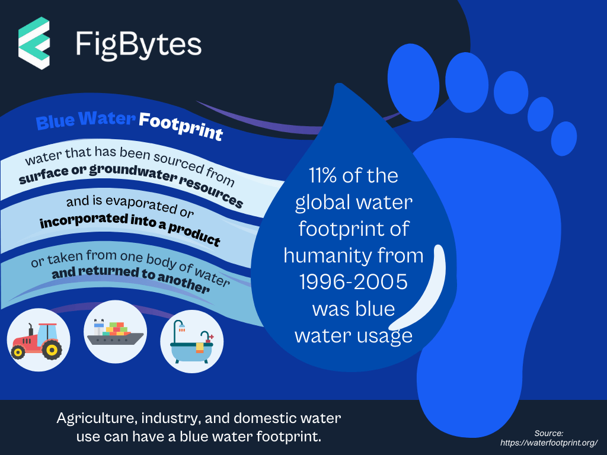
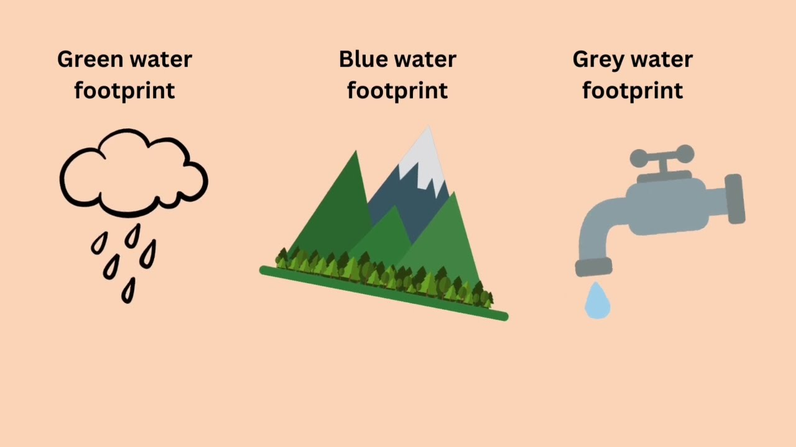

SAVE . UTILIZE. CONTRIBUTE
WELCOME TO JAL MITRA
WATER RANGE
PREVENTION
CALCULATION WF
CONTRIBUTION
IDEAS
WATER RANGE
PREVENTION
CALCULATION WF
CONTRIBUTION
IDEAS


ABOUT US
JAL MITRA is a powerful tool for assessing water use in agriculture and industries. By understanding the water footprint of different products and processes, we can identify opportunities for water savings and promote more sustainable water use practices in agriculture..

SIGN UP FOR UPSCALLING OF THE STANDARDS OF AGRICULTURE AND INDUTRIES
As global water scarcity becomes an increasingly pressing issue, recognizing the water footprint of various products is essential for promoting sustainable practices. Our platform provides valuable insights into the water consumption associated with agricultural crops and industrial processes, empowering farmers, businesses, and consumers to make informed decisions.